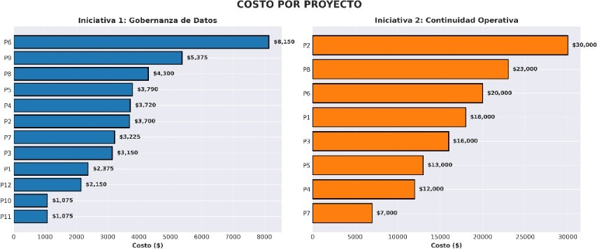
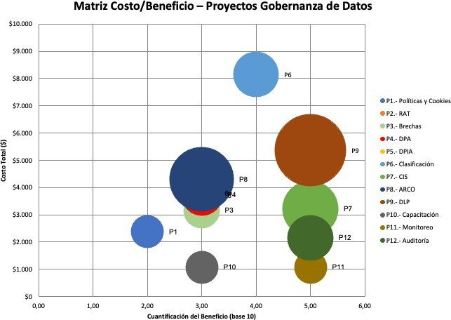
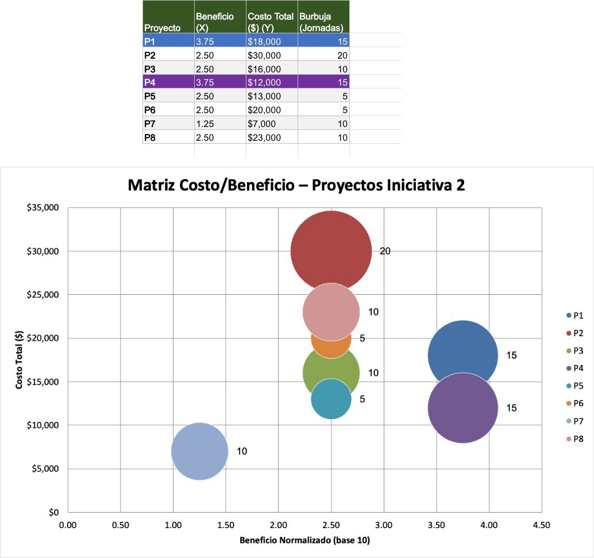

El punto de partida
Por qué un plan de seguridad también necesita un análisis financiero
Tener un buen plan no basta si nadie puede decir cuánto cuesta y qué se obtiene a cambio. Este ejercicio tomó los veinte proyectos de las dos iniciativas ya definidas y, para cada uno, estimó su costo —en jornadas de consultoría especializada, tecnología y licenciamiento— y puntuó su beneficio esperado contra una lista fija de resultados de negocio: cumplimiento normativo, reducción de riesgo, capacidad de respuesta.
Eso convirtió una lista de buenas ideas en algo que un comité de presupuesto puede realmente comparar y priorizar.
Paso 1
Ponerle precio a cada proyecto, uno por uno
El costo de cada proyecto se estimó usando una tarifa de referencia de consultoría especializada (275 USD por jornada), más estimaciones de mercado para tecnología, licenciamiento y servicios gestionados. El resultado, sumado por iniciativa, deja una diferencia difícil de ignorar: la Iniciativa 1 (Gobernanza de Datos) cuesta 42.085 USD en total; la Iniciativa 2 (Continuidad Operativa) cuesta 109.000 USD —casi el triple.

Para qué sirve esto en una empresa
Conocer no solo el costo total, sino qué proyecto concreto lo dispara, permite negociar, escalonar en el tiempo o recortar un plan de forma quirúrgica, en lugar de tener que aceptarlo o rechazarlo como un bloque único.
Paso 2
Puntuar el beneficio de cada proyecto, no solo su costo
Un proyecto barato no es automáticamente una buena inversión, y uno caro no es automáticamente malo —los dos números solo significan algo cuando se leen juntos. Cada proyecto se puntuó comparándolo contra una lista fija de beneficios esperados y contando cuántos de ellos realmente cubre. El resultado ubica cada proyecto en un mapa de costo contra beneficio.

Para qué sirve esto en una empresa
La prevención de fuga de datos y el programa de monitoreo y cumplimiento obtuvieron juntos la puntuación de beneficio más alta de todo el análisis, costando menos de 6.500 USD combinados —exactamente el tipo de proyecto "barato y de alto impacto" que una empresa no debería posponer.
Paso 3
Cruzar ambos datos para decidir qué financiar primero
Con el costo y el beneficio ya puntuados, colocar cada proyecto en un mismo gráfico —costo en un eje, beneficio en el otro— hace visible la prioridad de un vistazo: lo que cae en la zona de beneficio alto y costo contenido va primero, sin importar a cuál de las dos iniciativas pertenezca.

Para qué sirve esto en una empresa
Este mismo gráfico mostró que, dentro de la Iniciativa 2, el proyecto más caro (el respaldo y recuperación ante desastres, 30.000 USD) obtuvo una puntuación de beneficio más baja que proyectos mucho más económicos —lo que no significa que sea innecesario, sino que ordena en qué secuencia conviene invertir primero.
La recomendación final
Por qué se prioriza la gobernanza de datos primero
Comparando ambas iniciativas como un todo, el análisis recomienda priorizar la Iniciativa 1 —Gobernanza de Datos— por tres razones concretas: cuesta aproximadamente un tercio de lo que cuesta la Iniciativa 2, varios de sus componentes más económicos obtuvieron la puntuación de beneficio más alta de todo el análisis, y responde directamente a una obligación normativa con plazos legales concretos que ninguna otra iniciativa cubre. Además, actúa como base: varios de sus controles —como clasificar qué información es sensible— son un requisito previo del que dependerán, tarde o temprano, incluso los proyectos de la propia Iniciativa 2.
$42.085 costo Iniciativa 1 · $109.000 costo Iniciativa 2 · Iniciativa 1 recomendada como prioridad